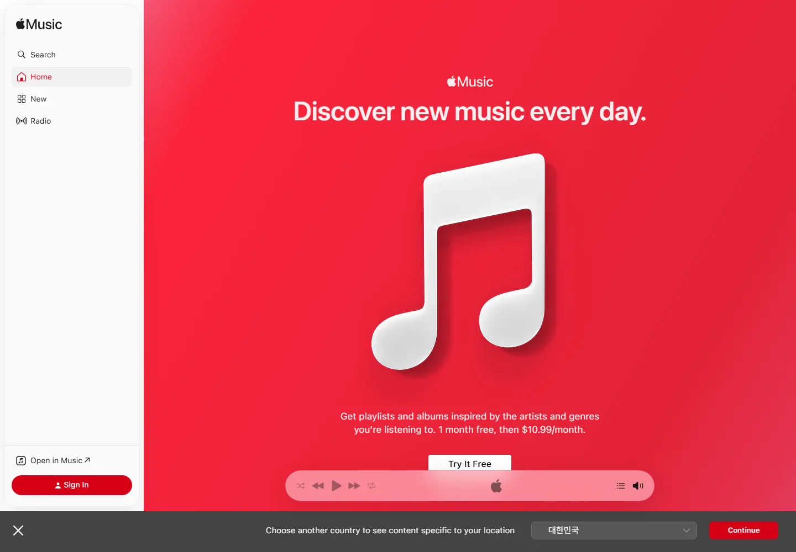
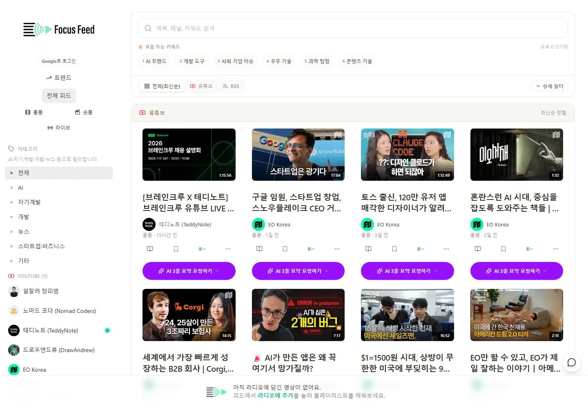
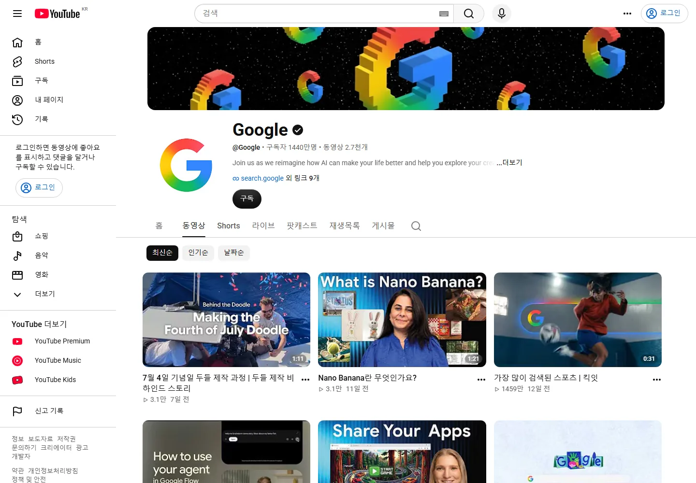
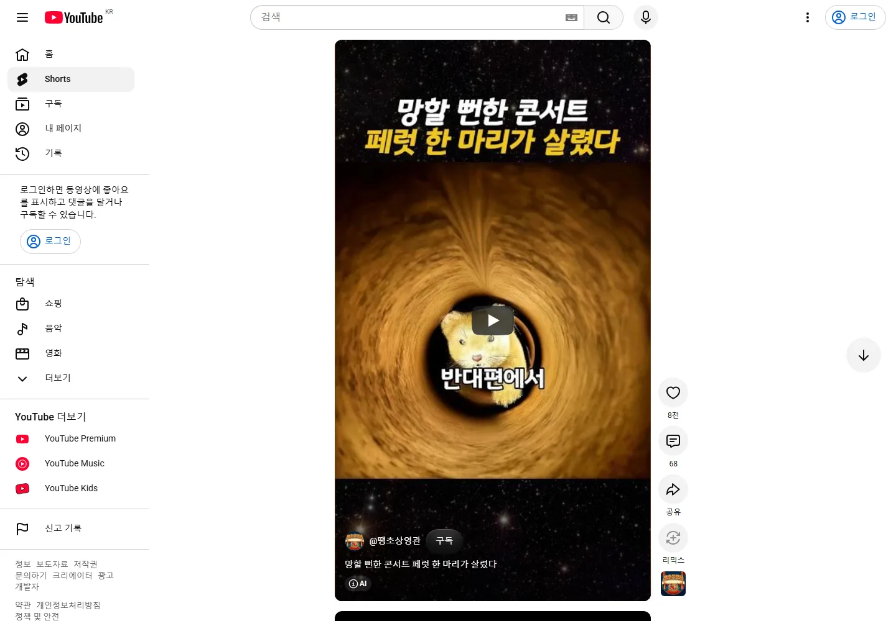
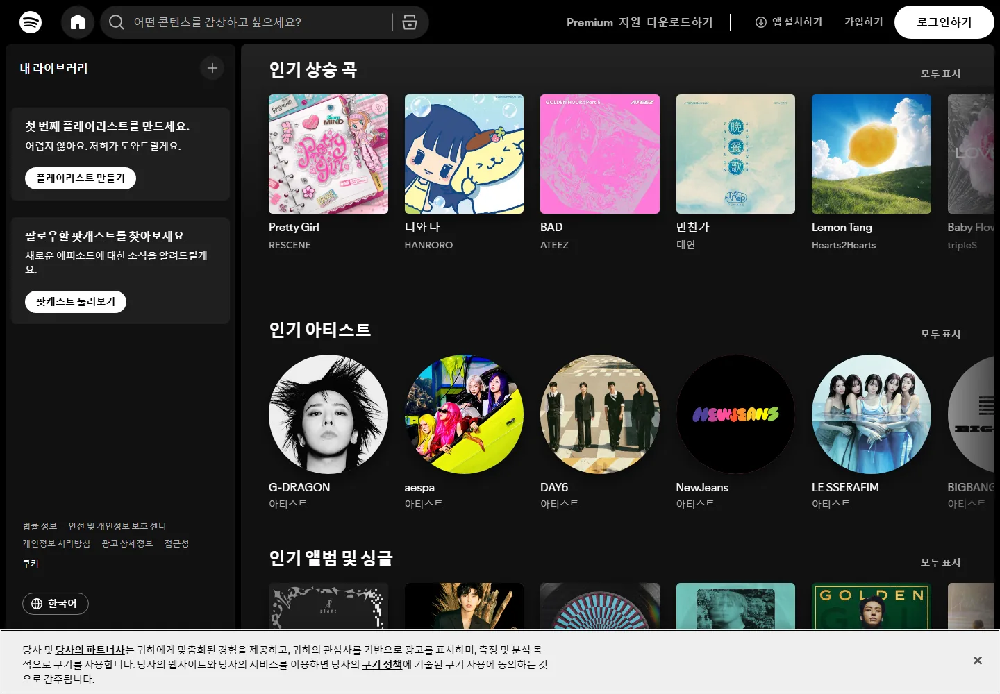

Reference · Apple Music
고정된 사이드바, 넓은 단일 콘텐츠 캔버스, 독립된 하단 플레이어.
실제 YouTube·Apple Music·Spotify와 현재 Focus Feed 캡처를 기준으로, 적용 화면을 데스크톱과 모바일 목업으로 구체화했습니다.
콘텐츠 영역은 밝고 조용하게 유지하고, 기능 레이어인 검색과 플레이어에만 깊이와 material을 줍니다.

고정된 사이드바, 넓은 단일 콘텐츠 캔버스, 독립된 하단 플레이어.

구조는 비슷하지만 검색·트렌드·카드 행동의 시각적 경쟁이 더 강합니다.
밝은 콘텐츠, 중립 사이드바, 어두운 플레이어. 가독성과 영상 썸네일 색을 가장 잘 살림.
몰입감은 좋지만 뉴스/RSS 장문 읽기와 라이트 브랜드 인상이 약해짐.
시스템 테마를 따르되 플레이어만 항상 어둡게. 구현 복잡도는 중간.
영상 썸네일과 제목이 먼저 읽혀야 합니다. AI 요약은 큰 보라색 막대가 아니라 선택 가능한 보조 행동으로 낮춥니다.

무테 16:9 카드, 길이 배지, 제목 2줄, 낮은 메타, 우측 더보기.
구조는 가깝지만 4개 액션과 보라색 CTA가 콘텐츠보다 강합니다.
2열은 정보 밀도가 높지만 제목·채널·행동이 작아집니다. YouTube 문법을 따른다면 모바일은 1열이 더 일관됩니다.
현재 롱폼 전체화면 Reel을 없애고, YouTube처럼 목록에서 선택한 뒤 URL이 있는 상세 페이지로 진입합니다.
9:16 캔버스를 고정하고 행동은 오른쪽, 문맥은 영상 하단으로 이동합니다. 현재 숏폼 방향은 맞지만 하단 별도 버튼 바를 제거해야 합니다.

영상 내부 문맥 + 오른쪽 행동 레일.
하단 바는 앱 전체에서 지속되고, 확장하면 영상·AI 요약·큐가 같은 재생 문맥 안에서 보입니다.

탐색 중에도 재생 문맥 유지, 명확한 재생 계층.
이 표를 승인하면 다음 구현부터 디자인 취향을 다시 논의하지 않고 동일한 기준으로 판단할 수 있습니다.
| 영역 | 결정 | 채택 | 제외 |
|---|---|---|---|
| 앱 기본 테마 | Apple Light + 시스템 다크 지원 | 밝은 콘텐츠·조용한 사이드바 | 전면 Spotify 다크 |
| 데스크톱 홈 | YouTube 3~5열 | 무테 16:9 카드 | 항상 보이는 큰 AI CTA |
| 모바일 홈 | YouTube식 1열 | 읽기·터치 우선 | 2열 고정 |
| 롱폼 | 목록 → `/watch/[videoId]` | 관련 영상·스크롤 복원 | 세로 Reel |
| 숏폼 | 9:16 세로 스냅 | 우측 행동·하단 문맥 | 별도 하단 버튼 바 |
| 라디오 | Spotify식 지속 플레이어 | 3구역 바·큐·확장 | Spotify 초록 브랜드 복제 |
| AI | 보라색 보조 행동 | 선택 시 강조 | 콘텐츠보다 강한 기본 CTA |